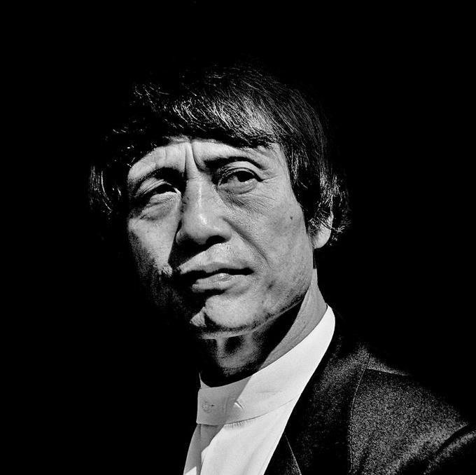
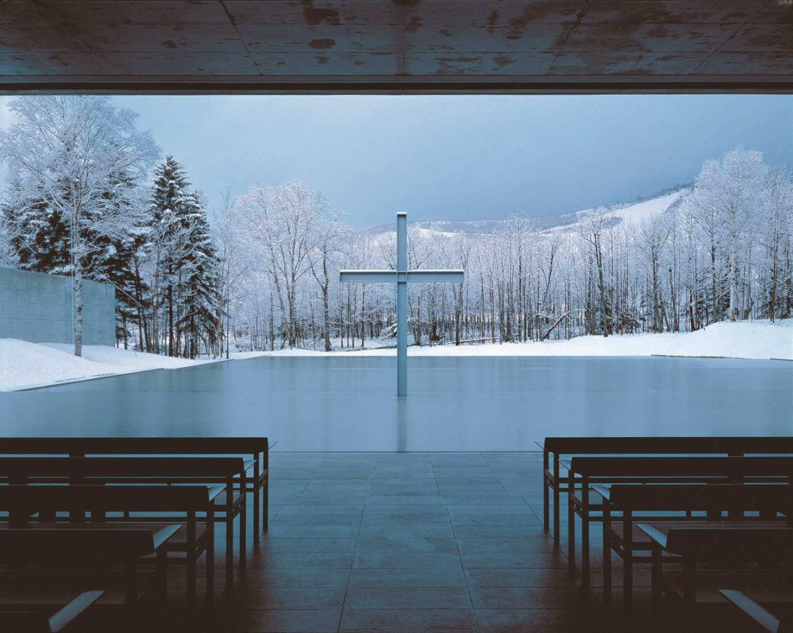
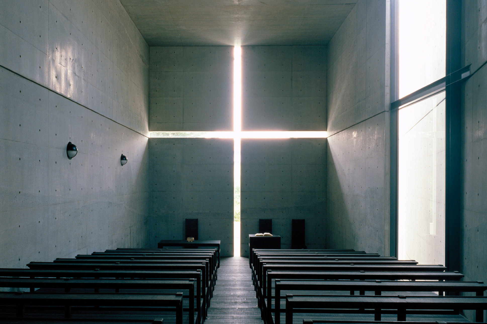

ANDO TADAO
Architect who connects nature and humans
Tadao Ando was born in Osaka, Japan in 1941. He was interested in making things from an early age and spent his childhood building wooden houses or making objects using the carpentry workshop near his house as a playground. He made his debut as a professional boxer while he was a student at a technical high school, and after two years as a boxer, he realized that it was not his path and entered the path of architecture that he had vaguely dreamed of before. He entered architecture through travel and self-taught, without an architectural education at university. He visited major temples, shrines, and historical sites in Japan, took apprenticeship classes from artisans and city designers, and mastered architecture in his own way. After that, he traveled to America, Europe, and Africa, seeing the buildings of architects such as Le Corbusier, Ludwig Mies Van der Rohe, Frank Lloyd Wright, and Louis Kahn which broadened his horizons.
 
In 1969, at the age of 28, he founded Tadao Ando Architects and Associates in his hometown Osaka. He opened an office, but he did not find an opportunity to design a proper house, and in early 1974 he took on the design of Row House in Sumiyoshi. In a three-unit-type row house located in Sumiyoshi, Osaka, the center house was demolished and reconstructed as a concrete box-type house, and this building became his debut work. For this building, he became famous when he was awarded by the Architectural Institute of Japan in 1979. Until the 1970s, the primary building material in Osaka was wood, but Ando used exposed concrete to create a quiet and inner space of thought cut off from the outside. He also placed a courtyard open to the sky in the center of the building to provide a passageway for communions with nature, such as light, wind, and rain. This empty space is as important as the building itself, and it has been transformed into an emotional space that stimulates the human soul and awakens the senses in Ando's subsequent works. Ando won the Cultural Design Prize for “Rokgo Housing One” built-in Kobe in 1983. Ando also creatively combined traditional Japanese style with modern Western design through Church on the Water, Hokkaido (1988), The Church of the Light, Osaka (1989), and Honpuku Temple(Water Temple), Hyogo (1991). All three buildings are concrete structures that are exquisitely constructed so that light illuminates the sacred space in the shape of a long vertical and horizontal cross. Ando created his own calm, meditative and intellectual space by introducing simple and geometric forms, the use of restrained light, and materials such as pure and clean concrete, iron, and glass.
In Tadao Ando's architecture, contrary to his unique cold gaze on space, his passion for architecture is felt more than anyone else's at once. He emphasized that architecture should not only deal with external conditions or solve functional problems but should awaken the senses and provide intellectual stimulation just as when exposed to poetry or music. His works are characterized by pure formative beauty, landscaping that embraces nature, the use of light that clearly separates light and dark, and the use of exposed concrete, a pure material. That is why he is called the architect of water, light, and exposed concrete. With gray concrete, the most artificial material, he beautifully harmonized the two opposites using the most natural water, light, and shadow. Ando creatively combined traditional Japanese style with modern Western design through several buildings. Most of his buildings are concrete structures that are exquisitely constructed so that light illuminates the sacred space in the shape of a long vertical and horizontal cross. Ando created his own calm, meditative and intellectual space by introducing simple and geometric forms, the use of restrained light, and materials such as pure and clean concrete, iron, and glass. Ando is famous for using concrete, considered a crude building material, to create buildings that evoke emotions like works of art. Infused with the pious and serene Zen spirit of Japan, his architecture exquisitely draws in the surrounding nature and light. It is characterized by arranging movement lines that maximize emotions and experiences. This is why some say that when you enter the building built by Tadao Ando, you feel like you are traveling. There are dozens of architects who have won the Pritzker Prize, but among them, Tadao Ando, unlike most the star architects, has not received any formal architectural education and has walked silently on a remote road with his own body. It is similar to the Japanese samurai in that they pursue it.


Nevertheless, there is some criticism, that his architecture is not human-friendly, in other words, ergonomic. Not only outdoors, but also indoors, as exposed concrete is not insulated, so it is very cold in winter and very hot in summer. The movement is inefficient and it is certainly intriguing because it emphasizes the part of becoming one with nature, but it is cold and uncomfortable. For example, in Azuma House, people are forced to leave the room unconditionally when passing through the room. It's beautiful and awe-inspiring, but it's not architecture that makes me want to live. Another is that it does not fit well with large-scale architectural projects. Ando's strength is mainly the feeling of a journey using detailed elements and inefficient movement lines in small architecture, but when it is adapted to large-scale architecture, too many small elements are repeated and discarded without clear use when it often appears as a large space.